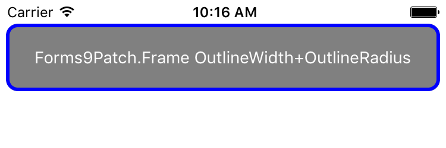

Using Forms9Patch's Layouts
Just as Xamarin.Forms.Frame extends Xamarin.Forms.ContentView by adding the OutlineColor and HasShadow properties, Forms9Patch.AbsoluteLayout, Forms9Patch.Frame, Forms9Patch.Grid, Forms9Patch.RelativeLayout and Forms9Patch.StackLayout extends their Xamarin.Forms counterparts with those two properties and adds the BackgroundImage, ElementShape, OutlineWidth, OutlineRadius, OutlineColor and ShadowInverted properties. In other words, everything you can do to decorate a Forms9Patch.Image, you can do to decorate Forms9Patch's layouts.
Additionally, the Forms9Patch layouts have the IgnoreChildren property as a way to improve app responsiveness. When a child element is updated, it kicks off a measurement and layout cycle that can propagate up through the view hierarchy - potentially consuming a lot of CPU. I'm looking at you, Xamarin.Forms.Android! Sometimes this is necessary in order to make room for or reclaim room from the updated child element. However, there a lot of instances where the updated child will never have an impact upon the rest of the view hierarchy - other than slowing everything down while Xamarin Forms goes through the measure-layout cycle. For example, if you have a Grid with fixed (GridUnitType.Absolute) or proportional (GridUnitType.Star) sized rows and columns then any change to a child will not change the Grid's layout. So, to keep an update of a child from propagating up the view hierarchy, set the IgnoreChildren property to true. Please note that this is a "running with scissors" feature that should be used carefully.
Background Image
Code Example
Here we are going to create a Forms9Patch.ContentView, set a background image, and have a label for Content.
new Forms9Patch.ContentView
{
BackgroundImage = new Forms9Patch.Image
{
Source = Forms9Patch.ImageSource.FromMultiResource ("Forms9PatchDemo.Resources.redribbon"),
Fill = Forms9Patch.Fill.Tile,
CapInsets = new Thickness(30,-1,160,-1),
},
Content = new Xamarin.Forms.Label
{
Text = "ContentView scalable (CapInsets)",
TextColor = Color.White,
FontAttributes = FontAttributes.Bold,
FontSize = 14,
HorizontalOptions = LayoutOptions.Center,
VerticalOptions = LayoutOptions.Center,
},
Padding = new Thickness(30,30,110,20),
HeightRequest = 80,
},
| iOS | Android |
|---|---|
XAML Example
As discussed earlier, using Embedded Resource images in XAML requires the use of a XAML markup extension in your view's namespace. Assuming such an extension has been setup, the following demonstrates how to use Forms9Patch.ContentView in XAML.
<?xml version="1.0" encoding="UTF-8"?>
<ContentPage
xmlns="http://xamarin.com/schemas/2014/forms"
xmlns:x="http://schemas.microsoft.com/winfx/2009/xaml"
xmlns:local="clr-namespace:MyXamlDemo;assembly=MyXamlDemo"
xmlns:Forms9Patch="clr-namespace:Forms9Patch;assembly=Forms9Patch"
x:Class="MyXamlDemo.MyPage"
Padding="5, 20, 5, 5">
<f9p:ContentView Padding="30,30,110,20" HeightRequest="80"/>
<f9p:ContentView.BackgroundImage>
<f9p:Image
Source="{local:ImageMultiResource Forms9PatchDemo.Resources.redribbon}"
CapInsets="23,-1,111,-1"
/>
</f9p:ContentView.BackgroundImage>
<Label Text="Forms9Patch.Image w/ CapInsets"
TextColor="White"
HorizontalOptions="Center"
VerticalOptions="Center"
FontSize="14"
/>
</f9p:ContentView>
</ContentPage>
Outline & Shadow
Outline & Shadow Code Example
var frame = new Forms9Patch.Frame {
Content = new Xamarin.Forms.Label {
Text = "Frame OutlineRadius & Shadow",
TextColor = Color.Black,
FontSize = 12,
},
Padding = new Thickness(10),
Background = Color.FromHex( 12),
OutlineRadius = 2,
HasShadow = true,
}
| iOS | Android |
|---|---|
 |
 |
Outline & Shadow XAML Example
<?xml version="1.0" encoding="UTF-8"?>
<ContentPage
xmlns="http://xamarin.com/schemas/2014/forms"
xmlns:x="http://schemas.microsoft.com/winfx/2009/xaml"
xmlns:local="clr-namespace:MyXamlDemo;assembly=MyXamlDemo"
xmlns:Forms9Patch="clr-namespace:Forms9Patch;assembly=Forms9Patch"
x:Class="MyXamlDemo.MyPage"
Padding="5, 20, 5, 5">
<StackLayout>
<f9p:Frame
Padding="20"
OutlineColor="Blue"
OutlineWidth="3"
OutlineRadius="10"
BackgroundColor="Gray"
/>
<Label Text="Forms9Patch.Frame w/ OutlineWidth+OutlineRadius"
TextColor="White"
HorizontalOptions="Center"
VerticalOptions="Center"
FontSize="14"
/>
</f9p:Frame>
</StackLayout>
</ContentPage>
| iOS | Android |
|---|---|
|  |